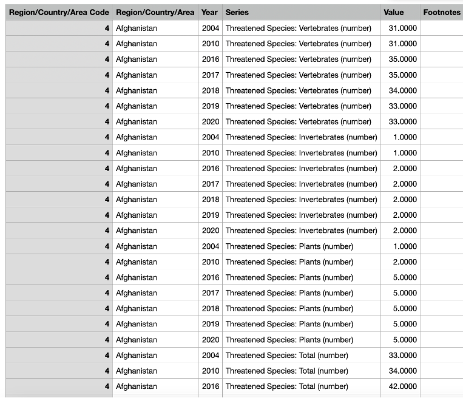
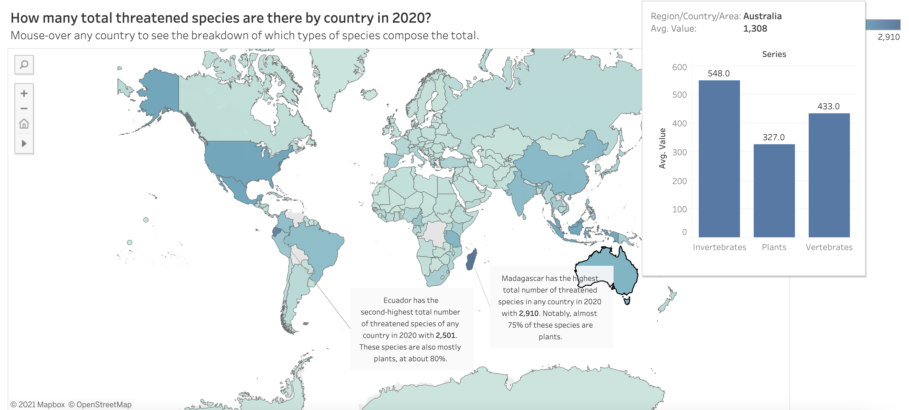

Threatened Species Over Time
Grace Myers, Anna Bolger, and Christina MacKenzie
Introduction
For this exploratory and explanatory data analysis, we chose to look at data on threatened species which we retrieved from the UN.This dataset contains 253 different countries and includes information spanning over 16 years (2004-2020). The dataset covers information on total threatened species numbers as well as breaks the numbers down by species including vertebrates, invertebrates and plants. In order to gain a better understanding of the data, we created dashboards and story points to answer the following questions:
Topic 1: Preliminary Data Exploration
Which countries are included in our data?
How many threatened species total are there by country in 2020?
How many threatened species for each type are there by country in 2020?
Topic 2: Looking at the Big Picture
Which countries have the highest total number of threatened species in 2020?
Which countries have the lowest total number of threatened species in 2020?
How has the total number of threatened species changed over time?
Topic 3: Diving into the Data
Which country has the highest number of threatened plants/vertebrates/invertebrates in 2020?
How do the numbers of threatened species of each type compare over a 10 year timespan?
How has the number of threatened species of each category changed over time?
Where has the number of threatened species been increasing most rapidly?
Link to data setPreliminary Data Exploration
This map explores what countries are included in the data. Countries highlighted in blue are inlcuded in our data and countries colored grey are missing from the data. Hovering over any country will display what country it is. The majority of countries over the globe is included in the data.

This map explores the total number of threatened species that each country contains in 2020, with a lighter shade of blue corresponding to a lower number and a darker shade of blue corresponding to a higher number. The tooltip shows the division of this total into the three types of species - invertebrates, plants, and vertebrates. The majority of the countries with higher numbers of endangered species are countries with higher human populations, such as the United States, China, and India. Notably, Ecuador and Madagascar have the two highest numbers of threatened species - each of which have the most threatened species which are plants by a huge margin.

This set of maps visualizes the total number of threatened species of each type, invertebrates, plants, and vertebrates, in each country in 2020. You can navigate through the maps showing the different types by clicking the different dividers at the top. It appears from these maps that the amounts of threatened vertebrates and invertebrates in a given country are correlated, while the number of threatened plants in a country is more independent. Further, the majority of threatened plants seems to be concentrated in two countries, Ecuador and Madagascar, which also are the two countries with the highest total number of threatened species.
Looking at the Big Picture
This visualization explores the top ten contrinutors to threatened species over time. The x-axis displays the name of each country and the y-axis displays how many total threatened species exist in the country in 2020. Hovering over each bar will display the name of the country and the number of threatened species in 2020.

This graph shows the 9 countries with the lowest number of threatened species in 2020. The two lowest of which are the Åland Islands and Holy See, each of which only lists one threatened species. This one species varies in types between the two countries, with one being a plant and the other a vertebrate. These two countries both have very small land areas, which could account for the low number of threatened species in each.
This chart reflects the total number of threatened species from the year 2004 to 2020. The overall trend is a linear increase at about 1800 new endangered species each year. The x-axis reflects the year and the y-axis reflects the total number of endangered species. Upon hovering you can view the exact number of threatened species for each year and the exact year.
Diving into the Data
This visualization reflects the number of threatened species in each category of vertebrate, invertebrate and plants. The upper left quadrant reflects the number of threatened plant species in each country in 2020. The right quadrant reflect the number of threatened invertebrate species in each country in 2020. The bottom left quadrant displays the total number of threatened vertebrate in each country in 2020. Hovering over each mark will display the number of threatened species in each catgeory for that specific country. In each category of species the greatest contributor to the threatened species is in the top left and the bottom contributors are displayed in the bottom left.


These stack bar charts allow us to compare the number of threatened species in each country a decade apart. In the top graph, it captures data from 2010 and the bottom graph captures data from 2020. The total number of threatened species increases for most countries between 2010 and 2020. Madagascar signifitcantly increases the number of threatened species between 2010 and 2020, going from having the 13th most threatened species to the most threatened species. Also, in the countries with the highest number of threatened species, the species with the most threatened species is usually plants.

This line chart shows how the number of threatened species of each category has changed over time. The trend-lines are meant to give an approximation of the average rate of change that each category has experienced over the years. By examining the slopes of the trend-lines, we see that the number of threatened vertebrate species has increased most rapidly over time, followed closely by the number of threatened plants. Invertebrates have increased at the slowest rate.

These line charts show the increase in threatened species between 2004 and 2020 for the 50 countries with the largest increases. The countries that are highlighted as having the highest levels of threatened species and most significant increaseas are: Ecuador, Madagascar, the USA, and Malaysia.
Reflections
Processes
Data Selection: We selected this dataset because we found it to be an interesting topic, and there was a large amount of data to explore given that the data was split by different types of species. Specifically, it makes distinctions between the number of threatened species which were invertebrates, plants, and vertebrates.
There were some blank spaces in the earlier data, such as 2004, which may lower some of the validity when comparing numbers across years. Additionally, the dataset did a good job of including most countries, with only a couple missing in Africa and South America. This wide selection of data provided a good opportunity for analysis, since there were so many data points available to be used. To clean the dataset, we edited the names of the column headings and removed some miscellaneous # characters in some of the values. Doing so allowed for easier importation into Tableau for use in creating our various visualizations.
Exploration: To explore our data, we decided to proceed in stages, first examining the preliminary characteristics of the data, then some more big picture findings, and finally more specific details. In the preliminary phase, we asked questions such as "which countries were included in our data?" and "how many threatened species total are there by country in 2020?" in order to gain more of a general view of what the data was showing. In doing so, we became more curious on how the data tied together at a more detailed level. To explore this further, we decided to begin to compare the total numbers of threatened species between countries, looking at the countries that have the highest and lowest total numbers so that we could begin to look for patterns. Additionally, we chose to look at how the total number of threatened species has changed over time. Finally, in our last topic, we decided to look at more detailed questions concerning the specific categories of threatened species that arose for us in the data. This included things such as looking at countries with the highest numbers of each type of threatened species, correlations between the types of threatened species, and how the numbers in each category have changed over time.
When it came time to decide which specific visualizations to include, we looked at which of our graphics told us the most about the data. For example, we left out some graphs which only gave us a small insight into the data, such as counts for different threatened species in total. These graphs were not informative unless they were broken down by year. Additionally, we wanted to tell a story in which one learns more about how the data is related to each other. We chose graphs such as the multiple line graphs that explained how the number of threatened species has been increasing over time by country. This allows the viewer to understand not only what the numbers are but how they are changing and at what rates.
Explanation:
Graph Usage
Line chart: Line charts were helpful to graph changes over time in this dataset. For example, in the graph comparing the number of different species overtime, the line graph is very useful.
Map: Maps were best used to graph differences in values between different countries. By encoding value in color, maps allow the user to get an overview of every country at once and easily identify differences in value between the various countries.
Bar Chart: bar charts are useful to compare different groups and their corresponding values. For example, we used a stacked bar graph to compare the number of multiple different species in different countries.
Tree Maps: Tree maps were useful in displaying a large amount of data very compactly, especially when we wanted to display all the data but with an emphasis on the top contributors to threatened species.
Final Remarks
Findings: The number of threatened species has increased over time in all areas across virtually all countries. This trend leads us to the conclusion that threatened species are a growing, global issue. Additionally, the number of threatened plants has increased at a higher rate than for other species since 2017. This is an important finding given the implications this can have for CO2 levels and global warming trends. Two countries which stand out most recently, in 2020, were Madagascar and Ecuador, who had the highest number of threatened species. In these countries, the vast majority of their threatened species were plants. Madagascar is of particular concern because the number of threatened species has increased by almost 30% within the last decade. These findings call for future research into why the number of species, particularly plants, that are threatened has grown considerably and how to alleviate this issue.